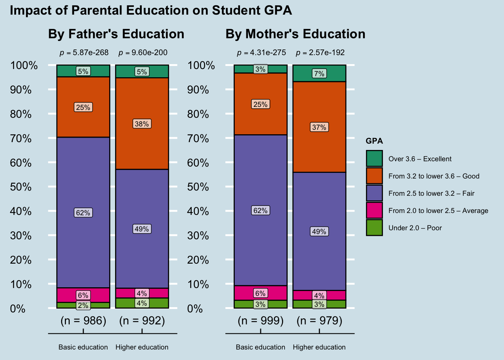

pacman::p_load(readxl, tidyverse, ggthemes, ggstatsplot, patchwork)Take-home Exercise 1
A Multi-Factorial Analysis of Student Performance in Vietnam’s Higher Education
1 Overview
1.1 Background
Student outcomes are influenced by a diverse array of factors. Understanding the intricate relationship between student demographics, individual perceptions, and external variables is essential for fostering an effective learning environment. Furthermore, these insights empower lecturers, academic advisors, and educational administrators to implement timely interventions, ultimately enhancing overall student performance.
1.2 Our Task
For this take-home exercise, both descriptive and inferential methods are employed to explore survey data. Utilizing visually-driven analysis, this report reveals and communicates key observations. The primary focus is on identifying patterns, trends, and relationships within the responses to interpret results effectively and inform data-driven decision-making.
2 Install and load Packages
In this exercise, we will utilize eight R packages to facilitate data import, manipulation, and advanced visualization:
readxl: For importing data from Excel spreadsheets.
tidyverse: A collection of fundamental R packages designed for data science, covering everything from data cleaning to creating static statistical graphs.
ggthemes: Provides additional themes, geometries, and scales to extend the styling capabilities of
ggplot2.ggstatsplot: Enhances
ggplot2by adding the results of statistical tests directly onto information-rich plots.patchwork: An intuitive tool for combining multiple
ggplot2objects into a single composite figure.
The following code chunk checks for the presence of these packages, installs any that are missing, and loads them into your R environment.
3 Data Preparation
3.1 The data
For this take-home exercise, we will use the “Dataset of factors affecting learning outcomes of students at the University of Education, Vietnam National University, Hanoi,” which was downloaded from [https://data.mendeley.com/datasets/23ppcdbmhc/1].
This dataset was constructed to facilitate research into student management and the diverse factors influencing academic performance. The data was gathered via a survey conducted from March to June 2023, resulting in 2,170 responses from students and alumni of the University of Education (VNU-UEd). The data is stored in a file named Database paper.xlsx within the Dataset about VNU studnets sub-folder of the project directory.
3.2 Import Data
The following code chunk utilizes the read_excel() function from the readxl package to import the dataset into the R environment.
survey_data <- read_excel("./Dataset about VNU students/Database paper.xlsx")The survey_data tibble consists of 22 variables, all of which are categorical. These can be further classified into nominal and ordinal data types:
Nominal Variables (6): These variables represent categories with no inherent rank or numerical order. They include:
Gender,Policy_Stu,Minority_Stu,Poor_Stu,Father_Occupation, andMother_Occupation.
Ordinal Variables (16): These variables represent categories with a logical sequence or scale (e.g., education levels or Likert scales). They include:
Demographics & Habits:
Year,Father_Edu,Mother_Edu,Time_Friends,Time_SocicalMedia,Time_Studying, andGPA.Perceptions & Environment (Likert Scales):
Adapt_Learning_Uni,Study_Methods,SupportOf_Uni,SupportOf_Lec,Facilitie_Uni,Quality_Lecturer,TrainingCurriculum,Competitive_Class, andInfluenceF_Friends.
3.3 Preparing the Data
3.3.1 Check Missing Values
sum(is.na(survey_data))[1] 0A preliminary data validation check confirmed that the dataset contains no missing values (NAs) across all 22 variables, ensuring a complete sample of 2,170 observations for analysis.
3.3.2 Data Wrangling and Factoring
Raw numeric survey responses were recoded into meaningful text labels and converted into factors to ensure logical sequencing for visualization using the code chunk below.
survey_data <- survey_data %>%
mutate(
# --- NOMINAL VARIABLES ---
Gender = factor(Gender, levels = c(1, 2), labels = c("Male", "Female")),
Policy_Stu = factor(Policy_Stu, levels = c(1, 2), labels = c("Yes", "No")),
Minority_Stu = factor(Minority_Stu, levels = c(1, 2), labels = c("Yes", "No")),
Poor_Stu = factor(Poor_Stu, levels = c(1, 2), labels = c("Yes", "No")),
Father_Occupation = factor(Father_Occupation, levels = c(1, 2, 3, 4, 5),
labels = c("Government employee", "Self-employment", "Freelance", "Other", "Not public")),
Mother_Occupation = factor(Mother_Occupation, levels = c(1, 2, 3, 4, 5),
labels = c("Government employee", "Self-employment", "Freelance", "Other", "Not public")),
# --- ORDINAL VARIABLES (Demographics & Habits) ---
Year = factor(Year, levels = c(1, 2, 3, 4, 5),
labels = c("First-year", "Second-year", "Third-year", "Fourth-year", "Graduated"), ordered = TRUE),
Father_Edu = factor(Father_Edu, levels = c(1, 2, 3, 4, 5, 6),
labels = c("Primary school", "Secondary school", "High school", "College school", "University/graduate education", "Other"), ordered = TRUE),
Mother_Edu = factor(Mother_Edu, levels = c(1, 2, 3, 4, 5, 6),
labels = c("Primary school", "Secondary school", "High school", "College school", "University/graduate education", "Other"), ordered = TRUE),
Time_Friends = factor(Time_Friends, levels = c(1, 2, 3, 4, 5),
labels = c("under 1 hour", "from 1 to lower 2 hours", "from 2 to lower 3 hours", "from 3 to lower 4 hours", "over 4 hours"), ordered = TRUE),
Time_SocicalMedia = factor(Time_SocicalMedia, levels = c(1, 2, 3, 4, 5),
labels = c("under 1 hour", "from 1 to lower 2 hours", "from 2 to lower 3 hours", "from 3 to lower 4 hours", "over 4 hours"), ordered = TRUE),
Time_Studying = factor(Time_Studying, levels = c(1, 2, 3, 4, 5),
labels = c("under 2 hours", "from 2 to lower 4 hours", "from 4 to lower 6 hours", "from 6 to lower 8 hours", "over 8 hour"), ordered = TRUE),
GPA = factor(GPA, levels = c(1, 2, 3, 4, 5),
labels = c("Under 2.0 – Poor", "From 2.0 to lower 2.5 – Average", "From 2.5 to lower 3.2 – Fair", "From 3.2 to lower 3.6 – Good", "Over 3.6 – Excellent"), ordered = TRUE)
) %>%
# --- ORDINAL VARIABLES (Likert Scales) ---
# Using across() to apply the same levels to all 9 environmental factors at once
mutate(across(c(Adapt_Learning_Uni, Study_Methods, SupportOf_Uni, SupportOf_Lec, Facilitie_Uni,
Quality_Lecturer, TrainingCurriculum, Competitive_Class, InfuenceF_Friends),
~ factor(.x, levels = c(1, 2, 3, 4, 5),
labels = c("Not at all", "Little", "Moderate", "Quite", "Very"), ordered = TRUE)))3.3.3 Glimpse of Data
# Display the first 10 rows of the processed dataset
glimpse(survey_data)Rows: 2,170
Columns: 22
$ Year <ord> Graduated, Graduated, Graduated, Graduated, Graduat…
$ Gender <fct> Female, Male, Female, Female, Male, Female, Female,…
$ Policy_Stu <fct> No, No, No, No, Yes, No, No, No, No, No, No, No, No…
$ Minority_Stu <fct> No, No, No, No, No, No, No, No, No, No, No, No, No,…
$ Poor_Stu <fct> No, No, No, No, No, No, No, No, No, No, No, No, No,…
$ Father_Edu <ord> College school, High school, College school, Univer…
$ Mother_Edu <ord> College school, High school, College school, Colleg…
$ Father_Occupation <fct> Self-employment, Self-employment, Government employ…
$ Mother_Occupation <fct> Freelance, Other, Self-employment, Government emplo…
$ Time_Friends <ord> from 1 to lower 2 hours, under 1 hour, under 1 hour…
$ Time_SocicalMedia <ord> from 1 to lower 2 hours, from 2 to lower 3 hours, f…
$ Time_Studying <ord> over 8 hour, over 8 hour, over 8 hour, over 8 hour,…
$ GPA <ord> From 3.2 to lower 3.6 – Good, From 2.5 to lower 3.2…
$ Adapt_Learning_Uni <ord> Quite, Moderate, Quite, Quite, Very, Quite, Quite, …
$ Study_Methods <ord> Quite, Moderate, Quite, Quite, Very, Quite, Quite, …
$ SupportOf_Uni <ord> Moderate, Moderate, Quite, Very, Very, Very, Very, …
$ SupportOf_Lec <ord> Quite, Quite, Quite, Very, Very, Quite, Very, Quite…
$ Facilitie_Uni <ord> Quite, Quite, Moderate, Very, Very, Very, Very, Qui…
$ Quality_Lecturer <ord> Quite, Moderate, Quite, Very, Very, Very, Quite, Ve…
$ TrainingCurriculum <ord> Quite, Moderate, Quite, Quite, Very, Quite, Very, Q…
$ Competitive_Class <ord> Moderate, Moderate, Quite, Quite, Quite, Moderate, …
$ InfuenceF_Friends <ord> Moderate, Quite, Quite, Quite, Very, Moderate, Very…4 Key Observations
4.1 Demographic Profile

# 1. Create the Year plot
p1 <- ggplot(survey_data, aes(x = Year, fill = Year)) +
geom_bar() +
stat_count(geom = "text", aes(label = after_stat(count)),
vjust = -0.8, size = 3, fontface = "bold") +
scale_fill_economist() +
scale_x_discrete(drop=FALSE)+
scale_y_continuous(expand = expansion(mult = c(0, 0.15))) +
labs(title = "Academic Year", x = NULL, y = NULL) +
theme_economist() +
theme(legend.position = "none",
axis.text.x = element_text(size = 8),
axis.ticks.x = element_blank()) + # Removes the x-axis ticks
coord_cartesian(clip = "off")
# 2. Create the Gender plot
p2 <- ggplot(survey_data, aes(x = Gender, fill = Gender)) +
geom_bar() +
stat_count(geom = "text", aes(label = after_stat(count)),
vjust = -0.8, size = 3, fontface = "bold") +
scale_fill_economist() +
scale_y_continuous(expand = expansion(mult = c(0, 0.15))) +
labs(title = "Gender", x = NULL, y = NULL) +
theme_economist() +
theme(legend.position = "none",
axis.ticks.x = element_blank()) + # Removes the x-axis ticks
coord_cartesian(clip = "off")
# 3. Create the Minority Status plot
p3 <- ggplot(survey_data, aes(x = Minority_Stu, fill = Minority_Stu)) +
geom_bar() +
stat_count(geom = "text", aes(label = after_stat(count)),
vjust = -0.8, size = 3, fontface = "bold") +
scale_fill_economist() +
scale_y_continuous(expand = expansion(mult = c(0, 0.15))) +
labs(title = "Ethnic Minority Status", x = NULL, y = NULL) +
theme_economist() +
theme(legend.position = "none",
axis.ticks.x = element_blank()) + # Removes the x-axis ticks
coord_cartesian(clip = "off")
# 4. Combine using patchwork
(p1) / (p2 + p3) +
plot_annotation(tag_levels = 'A',
title = "Demographic Profile of VNU Respondents")
NoteThings we can learn from the plots
Academic Year: While the survey was designed to include all academic levels, the processed dataset contains no responses from first-year or second-year students; consequently, the analysis focuses exclusively on third-year, fourth-year, and graduated respondents.
Gender: The sample is heavily skewed toward Female respondents (1,930 vs. 240).
Ethnic Minority Status: Only a small portion of the sample (129) identify as Ethnic Minority Students.
4.2 Economic Status

# Plotting the overlap between Household Status and Policy Support
ggplot(survey_data, aes(x = Poor_Stu, fill = Policy_Stu)) +
geom_bar(position = "fill") +
scale_y_continuous(labels = scales::percent) +
# Update labels directly in the scale
scale_fill_economist(labels = c("Receiving Support", "No Support")) +
labs(title = "Policy Support Distribution by Household Status",
x = "Coming from Poor Household",
y = "Proportion",
fill = NULL) + # Removes the legend title
theme_economist() +
theme(
axis.ticks.x = element_blank(),
legend.position = "top",
legend.justification = "right",
legend.text = element_text(size = 9)
)
NoteThings we can learn from the plot
- The analysis reveals a perfect alignment between household economic status and government assistance; 100% of students identified as coming from poor households are actively receiving government policy support. Additionally, a notable segment of the non-poor student population also benefits from these policies, indicating that support eligibility extends beyond strict poverty classifications to include other social or academic criteria.
4.3 Parental Professional Synergy
This section analyzes the combined influence of parental occupations on student achievement, defined here as the combined percentage of “Good” and “Excellent” GPA tiers (GPA > 3.2). By mapping these career intersections, we identify the Socio-Professional Capital that serves as a foundational driver for academic success.

# 1. Prepare and Clean Data
synergy_data <- survey_data %>%
group_by(Father_Occupation, Mother_Occupation) %>%
summarise(
n_students = n(),
high_perf_count = sum(GPA %in% c("Over 3.6 – Excellent", "From 3.2 to lower 3.6 – Good"), na.rm = TRUE),
.groups = 'drop'
) %>%
mutate(
success_rate = (high_perf_count / n_students) * 100,
Mother_Occupation = stringr::str_wrap(Mother_Occupation, width = 12),
Father_Occupation = stringr::str_wrap(Father_Occupation, width = 12),
text_color = ifelse(success_rate > 55, "white", "#333333")
)
# 2. Polished Heatmap
ggplot(synergy_data, aes(x = Mother_Occupation, y = Father_Occupation, fill = success_rate)) +
geom_tile(color = "white", linewidth = 1.2) +
scale_fill_gradient(
low = "#d9edff",
high = "#00407d",
name = "SUCCESS RATE (%)",
guide = guide_colorbar(barwidth = 1, barheight = 10, ticks = FALSE)
) +
geom_text(
aes(label = paste0(round(success_rate, 0), "%"), color = text_color),
size = 4,
fontface = "bold"
) +
scale_color_identity() +
theme_economist() +
labs(
title = "Parental Professional Synergy",
subtitle = "Combined Success Rate (Good & Excellent GPA) by Career Intersection",
x = "Mother's Occupation",
y = "Father's Occupation"
) +
theme(
panel.grid.major = element_blank(),
panel.grid.minor = element_blank(),
axis.line = element_blank(),
axis.ticks = element_blank(),
axis.text.x = element_text(angle = 0, size = 9, vjust = 0.5),
axis.text.y = element_text(size = 9),
axis.title = element_text(size = 10, face = "bold", margin = margin(t = 15)),
legend.position = "right",
plot.title = element_text(margin = margin(b = 20), face = "bold", size = 16),
plot.subtitle = element_text(size = 11, face = "italic")
)
NoteThings we can learn from the plot
The highest success rates are found in households where the father’s occupation is categorized as “Not public”. Specifically, intersections with mothers in Self-employment (75%) and Government employment (67%) show the highest density of top-tier academic performers.
The lowest success rates (0% to 10%) are consistently associated with households where the mother’s occupation is “Not public”, regardless of the father’s professional background.
4.4 Intrinsic Drivers
4.4.1 Parental Educational Background
In this section, we analyze how parental educational background relates to students’ academic performance. To facilitate a more direct comparison, parental education was consolidated into two distinct categories: ‘Basic Education’ and ‘Higher Education’. Due to the ambiguous nature of the ‘Other’ category, those responses were excluded from this specific analysis to ensure the integrity of the comparison between formal educational tiers.
survey_data_filtered <- survey_data %>%
mutate(
Father_Edu_Simple = fct_collapse(Father_Edu,
"Basic education" = c("Primary school", "Secondary school", "High school"),
"Higher education" = c("College school", "University/graduate education")
),
Mother_Edu_Simple = fct_collapse(Mother_Edu,
"Basic education" = c("Primary school", "Secondary school", "High school"),
"Higher education" = c("College school", "University/graduate education")
)
) %>%
# Remove "Other" so it doesn't skew the Basic vs. Higher comparison
filter(Father_Edu_Simple != "Other" & Mother_Edu_Simple != "Other")
# 1. Plot for Father's Education
p1 <- ggbarstats(
data = survey_data_filtered,
x = GPA,
y = Father_Edu_Simple,
label = "percentage",
label.args = list(size = 2.5, fill = "white", alpha = 0.7),
title = "By Father's Education",
messages = FALSE,
bf.message = FALSE
) +
theme_economist() +
labs(x = NULL)
# 2. Plot for Mother's Education
p2 <- ggbarstats(
data = survey_data_filtered,
x = GPA,
y = Mother_Edu_Simple,
label = "percentage",
label.args = list(size = 2.5, fill = "white", alpha = 0.7),
title = "By Mother's Education",
messages = FALSE,
bf.message = FALSE
) +
theme_economist() +
labs(x = NULL)
# 3. Combine with Patchwork
(p1 | p2) +
plot_layout(guides = "collect") +
plot_annotation(
title = "Impact of Parental Education on Student GPA",
theme = theme_economist()
) &
theme(
# Reduce legend text size to save horizontal space
legend.text = element_text(size = 7),
legend.title = element_text(size = 8, face = "bold"),
legend.position = "right",
# Increase space between panels but reduce outer margins to expand plots
panel.spacing = unit(2, "lines"),
plot.margin = margin(5, 5, 5, 5),
# Clean up axis labels to prevent overlap
axis.text.x = element_text(size = 7, vjust = 0.5),
plot.title = element_text(size = 13, face = "bold")
)
NoteThings we can learn from the plots
The comparative analysis of parental education reveals a statistically significant relationship with student academic performance.
Positive Performance Shift: Students with parents from ‘Higher Education’ backgrounds demonstrate a clear upward shift in GPA categories compared to the ‘Basic Education’ group. Specifically, the proportion of students achieving a ‘Good’ GPA increases from 25% to 38% for Father’s education and from 25% to 37% for Mother’s education.
Consistency Across Parents: The impact is remarkably consistent between both parents. In both cases, the dominant GPA category shifts from ‘Fair’ (62%) in the Basic group to a more balanced distribution between ‘Fair’ (49%) and ‘Good’ (~37%) in the Higher Education group.
Statistical Significance: The extremely low \(p\)-values (\(p < .001\)) across all groups confirm that these distributions are not random and that parental educational attainment is a robust indicator of a student’s academic trajectory.
4.4.2 Behavioral Habits & Time Usage
In this section, we evaluate how time spent on studying, social media, and interacting with friends affects student performance. By calculating the success rate—defined as the percentage of students achieving a GPA of 3.2 or higher—across various time intervals, we aim to identify the ideal time commitment for each activity.

# 1. Define High GPA levels based on your factor labels
high_gpa_levels <- c("From 3.2 to lower 3.6 – Good", "Over 3.6 – Excellent")
# 2. Function to calculate percentage of students achieving a high GPA for each activity
calc_pct <- function(df, var_name) {
orig_levels <- levels(df[[var_name]])
df %>%
group_by(Time_Level = !!sym(var_name)) %>%
summarise(
pct = (sum(GPA %in% high_gpa_levels) / n()) * 100,
.groups = "drop"
) %>%
mutate(
Activity = var_name,
Time_Level = as.character(Time_Level)
)
}
# 3. Combine variables manually
plot_data <- bind_rows(
calc_pct(survey_data, "Time_Friends"),
calc_pct(survey_data, "Time_SocicalMedia"),
calc_pct(survey_data, "Time_Studying")
)
# 4. Smart Re-factoring: Automatically pulls levels from survey_data
all_levels <- c(levels(survey_data$Time_Friends),
levels(survey_data$Time_SocicalMedia),
levels(survey_data$Time_Studying))
plot_data$Time_Level <- factor(plot_data$Time_Level, levels = unique(all_levels))
# 5. Clean Activity labels for display
plot_data <- plot_data %>%
mutate(Activity = case_when(
Activity == "Time_Friends" ~ "Time with Friends",
Activity == "Time_SocicalMedia" ~ "Time on Social Media",
Activity == "Time_Studying" ~ "Time on Studying"
))
# 6. Create the Plot
ggplot(plot_data, aes(x = Time_Level, y = pct, group = Activity, color = Activity)) +
geom_line(linewidth = 1.5) +
geom_point(size = 3.5) +
geom_text(aes(label = paste0(round(pct, 1), "%")),
vjust = -1.5, size = 3, fontface = "bold", show.legend = FALSE) +
facet_wrap(~Activity, scales = "free_x", nrow = 1) +
scale_y_continuous(limits = c(min(plot_data$pct)-5, max(plot_data$pct)+5)) +
scale_color_economist() +
theme_economist() +
labs(title = "Time Allocation Patterns and Academic Success Rates",
x = NULL, y = "Success Rate (%)") +
theme(
plot.title = element_text(
face = "bold",
size = 14,
margin = margin(b = 30)
),
panel.spacing = unit(2, "lines"),
plot.margin = margin(t = 20, r = 15, b = 50, l = 15),
axis.text.x = element_text(angle = 45, hjust = 1, vjust = 1, size = 8, color = "black"),
strip.text = element_text(face = "bold", size = 11, margin = margin(b = 15)),
legend.position = "none"
)
NoteThings we can learn from the plots
Social Media: Performance is stable (38–39%) up to 4 hours of use but drops sharply to 27.4% beyond that threshold, indicating a clear limit for productivity.
Studying: Success rates peak at 37.6% for students studying over 8 hours daily. A significant dip to 23.4% occurs at the 2–4 hour mark, suggesting moderate effort may be insufficient.
Socializing: A “sweet spot” exists at 1–2 hours daily (38.5% success). Effectiveness declines as social time exceeds 3 hours, likely due to time displacement.
To maximize success, the data suggests prioritizing 6+ hours of study, limiting social media to under 4 hours, and maintaining a balanced 1–2 hours of social interaction.
4.5 Institutional & Environmental Factors
This section evaluates the institutional environment and its perceived influence on learning. By analyzing student assessments of teaching methods, faculty accessibility, and infrastructure, we identify the primary environmental drivers of the academic experience.
4.5.1 The Academic & Institutional Ecosystem
A 100% stacked bar chart illustrates student perceptions across various environmental factors and their perceived influence on learning outcomes. By arranging the factors in descending order of ‘Very’ ratings, the chart highlights the elements students identify as having the most significant impact on their academic experience.

# 1. Prepare Data
likert_long <- survey_data %>%
select(
"Adaptation to University" = Adapt_Learning_Uni,
"Study Methods" = Study_Methods,
"University Support" = SupportOf_Uni,
"Lecturer Support" = SupportOf_Lec,
"University Facilities" = Facilitie_Uni,
"Lecturer Quality" = Quality_Lecturer,
"University Curriculum" = TrainingCurriculum,
"Class Competitiveness" = Competitive_Class,
"Peer Influence" = InfuenceF_Friends
) %>%
pivot_longer(cols = everything(),
names_to = "Variable",
values_to = "Response")
# 2. Rank based on 'Very'
rank_order <- likert_long %>%
group_by(Variable) %>%
summarize(p_very = sum(Response == "Very") / n()) %>%
arrange(p_very) %>%
pull(Variable)
# 3. Reorder the Factor and Ensure Response Levels are Logical
likert_long <- likert_long %>%
mutate(Variable = factor(Variable, levels = rank_order),
Response = factor(Response, levels = c("Not at all", "Little", "Moderate", "Quite", "Very")))
# 4. Final Professional Execution
ggplot(likert_long, aes(x = Variable, fill = Response)) +
geom_bar(position = "fill", width = 0.6) +
coord_flip() +
scale_y_continuous(
labels = scales::percent_format(),
expand = expansion(mult = c(0, 0.02))
) +
scale_fill_brewer(palette = "RdYlGn", direction = 1) +
labs(
title = "Perceptions of the Institutional Environment",
x = NULL,
y = "Percentage of Responses",
fill = "Rating:"
) +
theme_economist() +
theme(
plot.title = element_text(face = "bold", size = 15, margin = margin(b = 40), hjust = 0),
axis.text.y = element_text(size = 9, face = "bold", color = "black"),
axis.text.x = element_text(size = 9),
axis.title.x = element_text(size = 10, margin = margin(t = 15), face = "italic"),
legend.position = "top",
legend.justification = "left",
legend.direction = "horizontal",
legend.title = element_text(size = 9, face = "bold"),
legend.text = element_text(size = 8),
plot.margin = margin(t = 30, r = 40, b = 25, l = 15),
# Cleaning up the grid
panel.grid.major.y = element_blank(),
axis.line.x = element_line(size = 0.5, color = "black")
) +
guides(fill = guide_legend(nrow = 1, byrow = TRUE, reverse = FALSE))
NoteThings we can learn from the plots
A granular analysis of the environment reveals that Lecturer Quality is the sole institutional factor to exceed the 50% threshold for ‘Very’ responses. This positions instructional excellence as the singular dominant strength of the academic ecosystem, while all other factors—including lecturer support, facilities, and curriculum—are perceived as secondary drivers of the student experience.
4.5.2 Systemic Interdependencies
This section examines the underlying relationships between student perceptions and academic achievement, utilizing Spearman’s Rank Correlation to identify which environmental drivers are most strongly linked to GPA outcomes.

# We convert factors to numeric levels (1-5) to calculate Spearman's rho
cor_data <- survey_data %>%
select(
"GPA" = GPA,
"Adaptation to University" = Adapt_Learning_Uni,
"Study Methods" = Study_Methods,
"University Support" = SupportOf_Uni,
"Lecturer Support" = SupportOf_Lec,
"University Facilities" = Facilitie_Uni,
"Lecturer Quality" = Quality_Lecturer,
"University Curriculum" = TrainingCurriculum,
"Class Competitiveness" = Competitive_Class,
"Peer Influence" = InfuenceF_Friends
) %>%
# Ensure they are ordered factors first, then convert to numeric
mutate(across(everything(), ~as.numeric(factor(.x, ordered = TRUE))))
# 2. Generate the plot
ggcorrmat(
data = cor_data,
type = "nonparametric", # Spearman correlation
matrix.type = "lower",
lab = TRUE,
lab_size = 3.5, # Slightly smaller to fit inside boxes
digits = 2,
sig.level = 0.05,
p.adjust.method = "holm",
colors = c("#d7191c", "#ffffbf", "#1a9641"),
title = "Systemic Interdependencies: Perception & Achievement",
subtitle = "Spearman's Rank Correlation Matrix",
hc.order = TRUE, # Groups variables by similarity
ggtheme = theme_economist()
) +
theme(
axis.text.x = element_text(angle = 45, hjust = 1, vjust = 1, size = 10, color = "black"),
axis.text.y = element_text(size = 10, color = "black"),
plot.title = element_text(face = "bold", size = 15, hjust = 0),
plot.subtitle = element_text(size = 11, face = "italic", margin = margin(b = 20), hjust = 0),
plot.margin = margin(t = 20, r = 20, b = 20, l = 20),
legend.position = "right",
panel.grid.major = element_blank()
)
NoteThings we can learn from the plots
Decoupling of Perception and Performance: Although Lecturer Quality exceeded the 50% “Very” satisfaction threshold, the correlation between environmental factors and GPA remains notably low or statistically non-significant.
Statistical Non-Significance: Key variables—including University Support, Facilities, Class Competitiveness, and Peer Influence—show no significant relationship with GPA (\(p > 0.05\)), as indicated by the “X” markings.
Institutional Role as a “Setting”: These results suggest that while the environment provides a high-quality academic setting, it does not function as a direct determinant of grades.
5 Conclusion
Academic achievement is driven by the interaction between a student’s home foundation, personal habits, and the university environment. The evidence proves that success is more closely linked to longitudinal factors—specifically parental education and professional synergy—than to the immediate institutional setting.
While the university provides a high-quality environment, particularly regarding lecturer quality, there is a clear “decoupling” between student perception and actual performance. Statistical analysis reveals that satisfaction with facilities and support does not function as a direct determinant of grades. Ultimately, the university serves as a backdrop, while the primary pillars of excellence remain the socio-professional capital and behavioral habits students establish prior to and outside of the campus ecosystem.